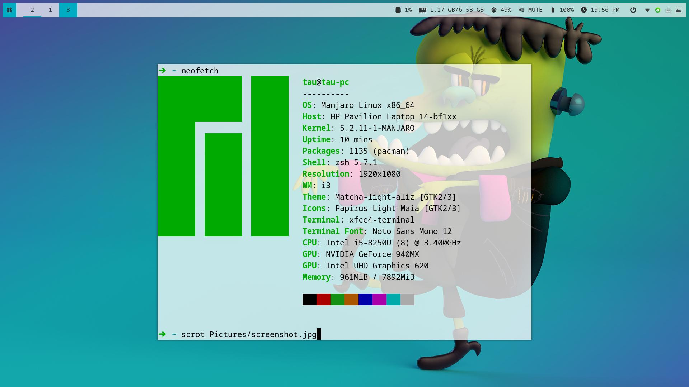
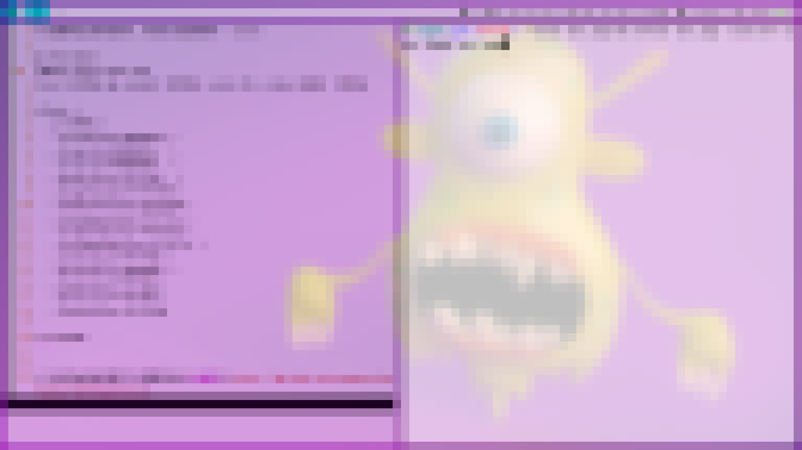

从 Windows 转战到 Linux 后，我用过 Elementray OS，国产的 Deepin，现在又换到了 Manjaro 。前面两个虽然总体上还算稳定，但是总是有一些小瑕疵让我难以忍受。例如 Deepin 的特效和动画总是有奇怪的线条出现，而且 UI 设计对 MAC OS 的模仿太明显了。
Manjaro 是在 B 站上看到有 up 主推荐知道的。我下载的是 xfce 的版本，然后把桌面环境换成了 i3 。
Manjaro 最好用的应该是它的软件包管理，pacman 比 apt 方便了不少，软件比较全且新，不需要手动添加很多软件源。
使用了大概有一周的时间，稳定性比起 Ubuntu 类的系统有过之而无不及。
下面记录的是我使用的一些软件和我的配置。
[TOC]
pacman 配置
添加 ArchlinuxCN 镜像
我使用的是清华的镜像，配置可以参考 ArchlinuxCN 镜像使用帮助。
修改配置文件后一定要安装 archlinuxcn-keying 导入 GPG key：sudo pacman -S archlinuxcn-keyring， 否则安装软件会失败。
更换中国源
这是表现 pacman 比 apt 好用的地方。直接输命令 sudo pacman-mirrors -c China 会自动选择对你来说速度更快的镜像。-c 是 country 的意思。
i3
i3 是一个平铺式的窗口管理器，所有的操作都可以用键盘直接完成。熟练了 i3 的快捷键后可以极大地提高工作的效率。
我的 i3 配置比较简单，只是添加了几个启动项，把默认的方向快捷键 jkl; 改成 vim 默认的 hjkl，还去掉了不太漂亮的边框。
想要自己增加一些快捷键，可以用 xmodmap 查看一下按键的名称。
xrandr 配置多显示器
i3 是不会像别的桌面环境自动检测多显示器，需要自己配置外接的显示器。
我这里使用的工具是 xrandr。直接输入这个命令会输出你所用显示器的信息。
我的主显示器是 eDP1，副显示器是 HDMI1。主显示器会自动开启，副显示器不会默认打开。
我可以输入 xrandr --output HDMI1 --auto --right-of eDP1 开启我的副显示器，HDMI1 在 eDP1 右边，所以用了 --right-of。
为了避免每次开机都需要重新输入命令的麻烦，可以写一个脚本在每次 i3 启动时自动检测是否插入副显示器。
#!env /bin/bash
hdmi=$(xrandr | grep 'HDMI1 connected')
if [ "$hdmi" != "" ]; then
xrandr --output HDMI1 --auto --right-of eDP1
else
xrandr --output HDMI1 --off
fi在 i3 的配置文件里面将上面的脚步添加为 exec_always。这样每次启动的时候，可以自动决定是否开启副显示器。
如果在运行过程中卸载或装载显示器，可以通过快捷键重启 i3。
i3lock
i3lock 是锁屏软件。 我使用的是一个 fork 版本 i3lock-color, 它比原版增加了颜色的设置。
下面是我的启动脚步，用到了截图软件 scrot：
#!/bin/bash
TMPBG=/tmp/screen.png
scrot $TMPBG && convert $TMPBG -scale 5% -scale 2000% $TMPBG
i3lock \
-i $TMPBG \
--insidecolor=0000001c \
--ringcolor=0000003e \
--linecolor=00000000 \
--keyhlcolor=ffffff80 \
--ringvercolor=ffffff00 \
--separatorcolor=22222260 \
--insidevercolor=ffffff1c \
--ringwrongcolor=ffffff55 \
--insidewrongcolor=ffffff1c \
--verifcolor=ffffff00 \
--wrongcolor=ff000000 \
--timecolor=ffffff00 \
--datecolor=ffffff00 \
--layoutcolor=ffffff00
rm $TMPBG锁屏界面： 
i3 的具体的配置可以看看我的i3 配置.
polybar
i3 也有一个 bar 叫 i3-status, 简单的显示足够了，想要更丰富的信息显示可以使用 polybar。
polybar 的配置最麻烦了。要想得到比较好看的效果最好在别人的基础上修改。 我的配置文件是在 polybar-theme 的基础上修改而来的，增加了一些 module 和多显示器的支持。 配置文件需要根据自己的硬件修改，官方的文档有详尽的说明。
Alacritty
我把终端模拟器从 xfce-terminal 换到了 Alacritty。
这个终端模拟器支持 GPU 加速，所有配置需要通过修改配置文件完成。它比较简单而且性能很好。
多显示器下，它不会自动根据显示器的 DPI 缩放内容，所以在不同的屏幕上文字的大小不一样。
这个问题这样通过在配置文件中添加 WINIT_HIDPI_FACTOR 环境变量解决，具体可以看看 github 上相关 Issues。
env:
WINIT_HIDPI_FACTOR: '1.6'
...其他软件
- rofi 可以作为一个启动器使用，功能很强大。
- oh-my-zsh 我的 shell 是 zsh ，当然要用 oh my zsh。
compton 这个是一个原版的 fork ，可以实现毛玻璃效果。- compton 切换回了 Archlinux 库中的版本，上面的版本在浏览器渲染的时候 CPU 占用率很高。
- nvim 从 vim 切换到了 nvim。无痛切换，因为我才入坑 vim 不久 :) 。
- onedrive 一个命令行的 onedrive, 用 D 语言构建，目前感觉很好用。
- variety 自动切换壁纸。
问题与解决方案
i3 不像其他完整的桌面环境提供所以设置的图形界面，所以很多操作需要通过命令来完成。 对 Linux 不精通的人来说，这是个让人头痛的事。 下面记录一些我遇到的问题和我的解决方案。
触控板配置
触控板默认的滑动方向我不是很习惯，而且不能轻触点击。我添加了配置改变触控板的默认设置，具体的文档可以参考 libinput。
下面是我的配置，配置文件需要放在 /usr/share/X11/xorg.conf.d/ 目录下。
Section "InputClass"
Identifier "touchpad"
Driver "libinput"
MatchIsTouchpad "on"
Option "Tapping" "on"
Option "AccelSpeed" "0.6"
Option "HorizontalScrolling" "on"
Option "NaturalScrolling" "True"
EndSection亮度调节
没有装 nvidia 显卡驱动之前，使用 xbacklight 是可以调节的，之后失效(sudo pacman -S xorg-xbacklight 安装 xbacklight)。
在网上查了一圈发现还有一个可以调节亮度的工具 light, manjaro 下可以直接 sudo pacman -S light-git 安装。
注意：你的用户需要加入 video 用户组，可以通过 sudo gpasswd -a [your_user_name] video 来添加。
compton 开启后 Chrome 占用大量 CPU 资源
我最开始使用 compton 的时候发现 Chrome 在渲染比较复杂的网页或者播放视频的时候， CPU 的使用率会特别的高。 关闭 compton 之后又会恢复正常。
所以我换回了 Archlinux 软件库里面的 compton 版本。
配置文件也是在这个版本的 github 仓库中的 sample 上修改而来， 主要就把 backend 的默认值 xrender 改成了 glx (需要根据自己的电脑修改)。
最后
我的部分配置文件放在了 github 上 dotfiles。
自己手动配置了很多东西后才发现开源的可贵，我现在使用的大多数软件都是开源的。感谢所有为开源软件做贡献的开发人员，他们为我们提供了无数的好用的软件。希望我在不久的将来也能为开源软件做点贡献。